# Required packages — run this once in the terminal before using the notebook:
# pip install nflreadpy pandas pyarrow
import nflreadpy as nfl
import pandas as pd
import numpy as npINST447 Final Project
Final project for INST447, Spring 2026
Executive Summary
This project was designed for NFL fans, fantasy football players, and sports analysts interested in comparing offensive team tendencies during the 2023 NFL season. The goal was to create a clean dataset that goes beyond basic stats and instead focuses on how teams behave in specific game situations. Using play-by-play data from nflverse through the Python package nflreadpy, we transformed nearly 49,000 plays into a final team-level dataset with four main metrics: early-down pass rate, fourth down aggressiveness and success rate, average plays per scoring drive, and red zone touchdown efficiency.
Several interesting patterns appeared during the analysis. Most NFL teams passed more often than they ran on early downs, showing how pass-heavy the league has become. Fourth down aggressiveness varied a lot between teams, but teams that went for it more often were not always the most successful. We also found that scoring drive length was fairly similar across the league, while red zone touchdown efficiency showed smaller but still meaningful differences between teams. The New York Jets ranked highly in both early-down pass rate and scoring drive efficiency, which stood out during the analysis.
The hardest part of the project was filtering thousands of plays into the exact situations needed for each research question. We also had to carefully merge and clean the data so that teams were not accidentally removed during transformations. One limitation we found was that some teams had many more offensive opportunities than others, which could affect certain efficiency metrics.
Achieved Purpose
This project achieved the purpose that it set out to complete. We answered the four main questions that we propose early on in the analysis. Through efficient dataset transformation, we were easily able to capture the top teams in major categories.
Our audience was intended to be statistically inclined NFL fans looking to do their own analysis. The analysis could be either on or related to these questions. We stuck to this throughout the project and made a dataset that fans could use in their own projects and analysis.
Extra Mile
We went beyond simple team stats by creating custom metrics from detailed play-by-play data, like early-down passing tendencies, fourth down aggressiveness, scoring drive efficiency, and red zone touchdown efficiency. This required filtering and transforming thousands of plays into specific game situations.
Source(s) and Extraction
Source Details Documentation
For this project, we are using NFL play-by-play data from the nflverse through the Python package nflreadpy. We chose play-by-play data because our project is focused on team tendencies in specific situations, like early downs, fourth downs, red zone plays, and scoring drives. Since the dataset has one row per play, it lets us filter to those exact situations instead of only using season-level totals.
How to find and access the same data:
The package is called nflreadpy and can be installed from PyPI. The package homepage is at https://nflreadpy.nflverse.com/, and the source code is on GitHub at https://github.com/nflverse/nflreadpy. To install it, run:
pip install nflreadpy pandas pyarrowOnce installed, the 2023 play-by-play data can be loaded with one function call:
pbp = nfl.load_pbp(seasons=[2023])
The full API reference for available load functions is at https://nflreadpy.nflverse.com/api/load_functions/. Data dictionaries describing every column in the play-by-play dataset are available through the related R package documentation at https://nflreadr.nflverse.com/articles/dictionary_pbp.html. The raw data files are hosted on GitHub under https://github.com/nflverse/nflverse-data, where nflreadpy retrieves them as Parquet files.
How the data was originally collected and generated:
The data comes from official NFL game records, along with sources like ESPN, where every play in every game is logged in real time. The nflverse team processes that raw data using tools like nflfastR, adding extra fields like expected points, win probability, air yards, and other advanced metrics.
After that, the cleaned and enhanced data is uploaded to GitHub and updated regularly during the season. The nflreadpy package makes it easier to download and load that data into Python.
Project questions:
Our project uses this dataset to answer four main questions:
- Which NFL teams had the highest pass rate on 1st and 2nd down with 10+ yards to go in 2023?
- Which NFL teams attempted the most 4th down conversions instead of punting or kicking a field goal in 2023, and what was their success rate?
- Which NFL teams had the shortest average number of plays per scoring drive in 2023?
- Which NFL teams had the highest touchdown rate on plays inside the opponent’s 20-yard line in 2023?
Variables of Interest
Below are the main variables we will use. Some come directly from the original dataset, and one variable is created later during transformation.
| Variable Name | Description | Values |
|---|---|---|
season |
The NFL season year | Integer; 2023 for this project |
week |
The week number within the season | Integer; 1–18 for regular season games |
game_id |
A unique identifier for each game | String; formatted as YYYY_WW_AWAY_HOME, e.g. 2023_01_BUF_NYJ |
season_type |
Whether the game was regular season or postseason | String; "REG" or "POST" |
posteam |
The team on offense, or the team with possession | String; NFL team abbreviation |
defteam |
The team on defense | String; NFL team abbreviation |
down |
The current down | Integer; 1, 2, 3, or 4 |
ydstogo |
Yards needed to earn a first down | Numeric |
yardline_100 |
Yards from the offense to the opponent’s end zone | Numeric; lower values mean closer to scoring |
play_type |
The category of play | String; examples include "pass", "run", "punt", "field_goal" |
pass |
Whether the play was a pass attempt | Binary; 1 = pass, 0 = not a pass |
rush |
Whether the play was a rushing attempt | Binary; 1 = rush, 0 = not a rush |
first_down |
Whether the play resulted in a first down | Binary; 1 = first down, 0 = no first down |
touchdown |
Whether the play resulted in a touchdown | Binary; 1 = touchdown, 0 = no touchdown |
fourth_down_converted |
Whether the offense converted a 4th down attempt | Binary; 1 = converted, 0 = did not convert |
fourth_down_failed |
Whether the offense failed a 4th down attempt | Binary; 1 = failed, 0 = not failed or not applicable |
drive |
Drive number within the game | Integer |
drive_play_count |
Number of plays in the drive | Integer |
drive_ended_with_score |
Whether the drive ended in a score | Binary; 1 = scoring drive, 0 = no score |
yards_gained |
Yards gained or lost on the play | Numeric |
game_seconds_remaining |
Seconds remaining in the game | Numeric |
score_differential |
Offensive team’s score minus defensive team’s score | Numeric |
in_red_zone |
Derived variable for red zone plays | Binary; 1 if yardline_100 <= 20, otherwise 0 |
Extraction Code
# Load 2023 NFL play-by-play data
pbp = nfl.load_pbp(seasons=[2023])
# nflreadpy loads data as a Polars DataFrame by default.
# We convert it to pandas because our group is more comfortable using pandas.
pbp = pbp.to_pandas()
# Confirm the data loaded correctly
print("Shape (rows, columns):", pbp.shape)
print("\nFirst 20 column names:")
print(list(pbp.columns[:20]))Shape (rows, columns): (49665, 372)
First 20 column names:
['play_id', 'game_id', 'old_game_id', 'home_team', 'away_team', 'season_type', 'week', 'posteam', 'posteam_type', 'defteam', 'side_of_field', 'yardline_100', 'game_date', 'quarter_seconds_remaining', 'half_seconds_remaining', 'game_seconds_remaining', 'game_half', 'quarter_end', 'drive', 'sp']Preview of Raw Dataset
pbp.head()| play_id | game_id | old_game_id | home_team | away_team | season_type | week | posteam | posteam_type | defteam | ... | out_of_bounds | home_opening_kickoff | qb_epa | xyac_epa | xyac_mean_yardage | xyac_median_yardage | xyac_success | xyac_fd | xpass | pass_oe | |
|---|---|---|---|---|---|---|---|---|---|---|---|---|---|---|---|---|---|---|---|---|---|
| 0 | 1.0 | 2023_01_ARI_WAS | 2023091007 | WAS | ARI | REG | 1 | NaN | NaN | NaN | ... | 0.0 | 1.0 | 0.000000 | NaN | NaN | NaN | NaN | NaN | NaN | NaN |
| 1 | 39.0 | 2023_01_ARI_WAS | 2023091007 | WAS | ARI | REG | 1 | WAS | home | ARI | ... | 0.0 | 1.0 | 0.000000 | NaN | NaN | NaN | NaN | NaN | NaN | NaN |
| 2 | 55.0 | 2023_01_ARI_WAS | 2023091007 | WAS | ARI | REG | 1 | WAS | home | ARI | ... | 0.0 | 1.0 | -0.336103 | NaN | NaN | NaN | NaN | NaN | 0.515058 | -51.505846 |
| 3 | 77.0 | 2023_01_ARI_WAS | 2023091007 | WAS | ARI | REG | 1 | WAS | home | ARI | ... | 0.0 | 1.0 | 0.703308 | 0.340652 | 3.328642 | 1.0 | 0.996628 | 0.583928 | 0.661106 | 33.889407 |
| 4 | 102.0 | 2023_01_ARI_WAS | 2023091007 | WAS | ARI | REG | 1 | WAS | home | ARI | ... | 0.0 | 1.0 | 0.469799 | NaN | NaN | NaN | NaN | NaN | 0.196065 | -19.606467 |
5 rows × 372 columns
Save Raw Dataset
# Save the raw data before making changes.
# Note: this file is large, so it should not be committed to GitHub.
pbp.to_csv("raw_nfl_pbp_2023.csv", index=False)
print("Saved: raw_nfl_pbp_2023.csv")Saved: raw_nfl_pbp_2023.csvExtraction Code Documentation
The load_pbp() function pulls the 2023 play-by-play data directly from nflverse. The data first loads as a Polars DataFrame, so we convert it to pandas because that is what we have mostly used in class.
We only load one season to keep the project consistent and easier to analyze. After loading, the dataset has around 49,000 plays, with each row representing one play.
At this point, the dataset still includes everything, including kickoffs, penalties, and other play types. We filter it down later based on what we actually need for our four questions.
Transformation Processes
Transformation Overview
This section takes the raw 2023 NFL play-by-play data and turns it into a cleaner team-level dataset. Instead of leaving the data as one row per play, we create a final dataset with one row per team and several summary metrics.
The four metrics we create are:
- Pass rate on 1st and 2nd down with 10+ yards to go
- Fourth down conversion attempts and success rate
- Average number of plays per scoring drive
- Red zone touchdown rate
Check That the Raw Data Is Available
# If the Source & Extraction section already ran, pbp should already exist.
# This backup makes the section easier to run by itself if needed.
try:
pbp
except NameError:
pbp = nfl.load_pbp(seasons=[2023]).to_pandas()
print(f"Raw data available: {pbp.shape[0]:,} plays and {pbp.shape[1]} columns")Raw data available: 49,665 plays and 372 columnsStep 1: Filter to Regular Season Games
We are focusing on regular season tendencies, so we remove postseason games.
pbp_reg = pbp[pbp["season_type"] == "REG"].copy()
print(f"Regular season plays: {pbp_reg.shape[0]:,}")
print(f"Removed {pbp.shape[0] - pbp_reg.shape[0]:,} non-regular-season plays")Regular season plays: 47,399
Removed 2,266 non-regular-season playsStep 2: Create a Red Zone Indicator
The raw data has yardline_100, but we create a simpler in_red_zone column to make the red zone question easier to answer.
pbp_reg["in_red_zone"] = (pbp_reg["yardline_100"] <= 20).astype(int)
red_zone_count = pbp_reg["in_red_zone"].sum()
print(f"Red zone plays: {red_zone_count:,}")Red zone plays: 7,274Step 3: Keep Scrimmage Plays
For most of our questions, we only want normal offensive plays. This removes plays like kickoffs and extra points.
pbp_scrimmage = pbp_reg[
(pbp_reg["play_type"].isin(["pass", "run", "qb_kneel", "qb_spike"])) |
(pbp_reg["pass"] == 1) |
(pbp_reg["rush"] == 1)
].copy()
print(f"Scrimmage plays: {pbp_scrimmage.shape[0]:,}")Scrimmage plays: 35,849Question 1: Pass Rate on 1st/2nd Down with 10+ Yards to Go
This answers which teams passed most often on 1st or 2nd down when they needed at least 10 yards.
early_down_long = pbp_scrimmage[
(pbp_scrimmage["down"].isin([1, 2])) &
(pbp_scrimmage["ydstogo"] >= 10)
].copy()
q1_results = early_down_long.groupby("posteam").agg(
early_down_long_plays=("play_id", "count"),
pass_plays=("pass", "sum"),
rush_plays=("rush", "sum")
).reset_index()
q1_results["early_down_pass_rate_pct"] = (
q1_results["pass_plays"] / q1_results["early_down_long_plays"] * 100
).round(2)
q1_results = q1_results.sort_values("early_down_pass_rate_pct", ascending=False)
q1_results["early_down_pass_rate_rank"] = range(1, len(q1_results) + 1)
q1_results.head(10)| posteam | early_down_long_plays | pass_plays | rush_plays | early_down_pass_rate_pct | early_down_pass_rate_rank | |
|---|---|---|---|---|---|---|
| 31 | WAS | 598 | 405.0 | 190.0 | 67.73 | 1 |
| 24 | NYJ | 595 | 373.0 | 215.0 | 62.69 | 2 |
| 23 | NYG | 586 | 365.0 | 211.0 | 62.29 | 3 |
| 17 | LAC | 582 | 361.0 | 212.0 | 62.03 | 4 |
| 6 | CIN | 568 | 348.0 | 209.0 | 61.27 | 5 |
| 27 | SEA | 565 | 342.0 | 212.0 | 60.53 | 6 |
| 14 | JAX | 614 | 371.0 | 230.0 | 60.42 | 7 |
| 25 | PHI | 603 | 364.0 | 233.0 | 60.36 | 8 |
| 15 | KC | 608 | 366.0 | 227.0 | 60.20 | 9 |
| 20 | MIN | 595 | 356.0 | 232.0 | 59.83 | 10 |
Question 2: Fourth Down Attempts and Success Rate
This answers which teams went for it most often on 4th down and how often they converted.
fourth_down_attempts = pbp_scrimmage[
(pbp_scrimmage["down"] == 4) &
(pbp_scrimmage["play_type"].isin(["pass", "run"]))
].copy()
q2_results = fourth_down_attempts.groupby("posteam").agg(
fourth_down_attempts=("play_id", "count"),
fourth_down_conversions=("fourth_down_converted", "sum"),
fourth_down_failures=("fourth_down_failed", "sum")
).reset_index()
q2_results["fourth_down_success_rate_pct"] = (
q2_results["fourth_down_conversions"] / q2_results["fourth_down_attempts"] * 100
).round(2)
q2_results = q2_results.sort_values("fourth_down_attempts", ascending=False)
q2_results["fourth_down_attempt_rank"] = range(1, len(q2_results) + 1)
q2_results.head(10)| posteam | fourth_down_attempts | fourth_down_conversions | fourth_down_failures | fourth_down_success_rate_pct | fourth_down_attempt_rank | |
|---|---|---|---|---|---|---|
| 4 | CAR | 48 | 23.0 | 25.0 | 47.92 | 1 |
| 10 | DET | 40 | 21.0 | 19.0 | 52.50 | 2 |
| 23 | NYG | 37 | 18.0 | 19.0 | 48.65 | 3 |
| 0 | ARI | 34 | 15.0 | 19.0 | 44.12 | 4 |
| 17 | LAC | 32 | 15.0 | 17.0 | 46.88 | 5 |
| 7 | CLE | 32 | 18.0 | 14.0 | 56.25 | 6 |
| 13 | IND | 32 | 16.0 | 16.0 | 50.00 | 7 |
| 24 | NYJ | 29 | 17.0 | 12.0 | 58.62 | 8 |
| 14 | JAX | 29 | 13.0 | 16.0 | 44.83 | 9 |
| 31 | WAS | 29 | 16.0 | 13.0 | 55.17 | 10 |
Question 3: Average Plays Per Scoring Drive
This answers which teams scored in the fewest plays on average.
scoring_drive_plays = pbp_scrimmage[pbp_scrimmage["drive_ended_with_score"] == 1].copy()
unique_scoring_drives = scoring_drive_plays.groupby(
["game_id", "posteam", "drive"]
).agg(
plays_in_scoring_drive=("drive_play_count", "max")
).reset_index()
q3_results = unique_scoring_drives.groupby("posteam").agg(
total_scoring_drives=("drive", "count"),
avg_plays_per_scoring_drive=("plays_in_scoring_drive", "mean")
).reset_index()
q3_results["avg_plays_per_scoring_drive"] = q3_results["avg_plays_per_scoring_drive"].round(2)
q3_results = q3_results.sort_values("avg_plays_per_scoring_drive")
q3_results["scoring_drive_efficiency_rank"] = range(1, len(q3_results) + 1)
q3_results.head(10)| posteam | total_scoring_drives | avg_plays_per_scoring_drive | scoring_drive_efficiency_rank | |
|---|---|---|---|---|
| 24 | NYJ | 58 | 6.83 | 1 |
| 19 | MIA | 86 | 7.37 | 2 |
| 21 | NE | 47 | 7.43 | 3 |
| 2 | BAL | 89 | 7.53 | 4 |
| 7 | CLE | 80 | 7.61 | 5 |
| 14 | JAX | 70 | 7.66 | 6 |
| 28 | SF | 82 | 7.67 | 7 |
| 31 | WAS | 63 | 7.76 | 8 |
| 23 | NYG | 50 | 7.78 | 9 |
| 10 | DET | 79 | 7.82 | 10 |
Question 4: Red Zone Touchdown Rate
This answers which teams scored touchdowns most often on plays inside the opponent’s 20-yard line.
red_zone_plays = pbp_scrimmage[pbp_scrimmage["in_red_zone"] == 1].copy()
q4_results = red_zone_plays.groupby("posteam").agg(
red_zone_plays=("play_id", "count"),
red_zone_touchdowns=("touchdown", "sum")
).reset_index()
q4_results["red_zone_td_rate_pct"] = (
q4_results["red_zone_touchdowns"] / q4_results["red_zone_plays"] * 100
).round(2)
q4_results = q4_results.sort_values("red_zone_td_rate_pct", ascending=False)
q4_results["red_zone_td_rank"] = range(1, len(q4_results) + 1)
q4_results.head(10)| posteam | red_zone_plays | red_zone_touchdowns | red_zone_td_rate_pct | red_zone_td_rank | |
|---|---|---|---|---|---|
| 28 | SF | 201 | 45.0 | 22.39 | 1 |
| 21 | NE | 98 | 21.0 | 21.43 | 2 |
| 31 | WAS | 142 | 30.0 | 21.13 | 3 |
| 2 | BAL | 201 | 42.0 | 20.90 | 4 |
| 19 | MIA | 192 | 40.0 | 20.83 | 5 |
| 3 | BUF | 200 | 41.0 | 20.50 | 6 |
| 25 | PHI | 182 | 36.0 | 19.78 | 7 |
| 10 | DET | 215 | 42.0 | 19.53 | 8 |
| 16 | LA | 193 | 36.0 | 18.65 | 9 |
| 5 | CHI | 161 | 30.0 | 18.63 | 10 |
Combine Results into Final Dataset
Now we merge the four result tables into one final dataset, so each team has all of its metrics in the same row.
final_dataset = q1_results[
["posteam", "early_down_long_plays", "early_down_pass_rate_pct", "early_down_pass_rate_rank"]
].copy()
final_dataset = final_dataset.merge(
q2_results[["posteam", "fourth_down_attempts", "fourth_down_success_rate_pct", "fourth_down_attempt_rank"]],
on="posteam",
how="outer"
)
final_dataset = final_dataset.merge(
q3_results[["posteam", "total_scoring_drives", "avg_plays_per_scoring_drive", "scoring_drive_efficiency_rank"]],
on="posteam",
how="outer"
)
final_dataset = final_dataset.merge(
q4_results[["posteam", "red_zone_plays", "red_zone_td_rate_pct", "red_zone_td_rank"]],
on="posteam",
how="outer"
)
final_dataset = final_dataset.fillna(0)
final_dataset = final_dataset.sort_values("posteam").reset_index(drop=True)
print("Final dataset shape:", final_dataset.shape)
final_dataset.head()Final dataset shape: (32, 13)| posteam | early_down_long_plays | early_down_pass_rate_pct | early_down_pass_rate_rank | fourth_down_attempts | fourth_down_success_rate_pct | fourth_down_attempt_rank | total_scoring_drives | avg_plays_per_scoring_drive | scoring_drive_efficiency_rank | red_zone_plays | red_zone_td_rate_pct | red_zone_td_rank | |
|---|---|---|---|---|---|---|---|---|---|---|---|---|---|
| 0 | ARI | 604 | 53.97 | 24 | 34 | 44.12 | 4 | 66 | 8.50 | 26 | 147 | 18.37 | 11 |
| 1 | ATL | 589 | 48.90 | 31 | 19 | 42.11 | 23 | 66 | 8.21 | 19 | 155 | 14.84 | 29 |
| 2 | BAL | 594 | 55.39 | 19 | 13 | 61.54 | 31 | 89 | 7.53 | 4 | 201 | 20.90 | 4 |
| 3 | BUF | 613 | 57.42 | 14 | 16 | 56.25 | 29 | 76 | 8.32 | 21 | 200 | 20.50 | 6 |
| 4 | CAR | 580 | 58.28 | 12 | 48 | 47.92 | 1 | 50 | 9.62 | 32 | 127 | 14.96 | 28 |
Save Final Dataset
final_dataset.to_csv("nfl_team_tendencies_2023.csv", index=False)
q1_results.to_csv("q1_early_down_pass_rate.csv", index=False)
q2_results.to_csv("q2_fourth_down_conversions.csv", index=False)
q3_results.to_csv("q3_scoring_drive_efficiency.csv", index=False)
q4_results.to_csv("q4_red_zone_touchdowns.csv", index=False)
print("Saved final dataset and individual question files.")Saved final dataset and individual question files.Transformation Documentation
The transformation process starts with the raw 2023 NFL play-by-play data and narrows it down into the situations we actually care about for our questions.
First, we filter to regular season games only. We do this because our project is about regular season tendencies, and playoff games can involve different coaching decisions and strategies.
Next, we create the in_red_zone variable. This is based on yardline_100, where a play is considered in the red zone if the offense is at or inside the opponent’s 20-yard line.
We also filter to scrimmage plays for the parts of the project focused on offensive tendencies. This helps remove plays like kickoffs and extra points that do not really answer our questions.
For Question 1, we look only at 1st and 2nd down plays with 10 or more yards to go. Then we calculate what percentage of those plays were passes for each team.
For Question 2, we look at 4th down plays where the offense chose to run or pass instead of punting or kicking a field goal. Then we count attempts and calculate each team’s success rate.
For Question 3, we identify drives that ended in points and calculate the average number of plays in those scoring drives. Teams with lower averages are scoring faster.
For Question 4, we look at red zone plays and calculate how often each team scored a touchdown on those plays.
Finally, we merge all four results together into one team-level dataset. This final dataset is easier to use because each row is one NFL team, and the columns contain all of the tendency metrics we created.
Analysis and Evaluation
Summary Statistics
Before answering our four core questions, we investigated our data deeply and took a look at summary statistics and variable distributions.
Here, we take a look at the minimum, maximum, and average values for our eight variables at a quick glance. We will be diving deeper into each of these distributions later on.
sum_columns = ["early_down_long_plays", "early_down_pass_rate_pct","fourth_down_attempts","fourth_down_success_rate_pct", "total_scoring_drives", "avg_plays_per_scoring_drive","red_zone_plays", "red_zone_td_rate_pct"]
final_dataset[sum_columns].describe()| early_down_long_plays | early_down_pass_rate_pct | fourth_down_attempts | fourth_down_success_rate_pct | total_scoring_drives | avg_plays_per_scoring_drive | red_zone_plays | red_zone_td_rate_pct | |
|---|---|---|---|---|---|---|---|---|
| count | 32.000000 | 32.000000 | 32.000000 | 32.000000 | 32.000000 | 32.000000 | 32.000000 | 32.000000 |
| mean | 586.687500 | 56.544062 | 24.781250 | 52.286875 | 69.468750 | 8.115625 | 168.562500 | 17.424687 |
| std | 25.092651 | 4.455825 | 7.950388 | 8.729037 | 10.616434 | 0.539808 | 32.085508 | 2.615786 |
| min | 537.000000 | 48.760000 | 13.000000 | 36.000000 | 47.000000 | 6.830000 | 98.000000 | 10.000000 |
| 25% | 567.500000 | 53.702500 | 19.000000 | 47.247500 | 63.000000 | 7.775000 | 146.500000 | 15.352500 |
| 50% | 590.000000 | 56.005000 | 23.500000 | 51.250000 | 69.500000 | 8.105000 | 168.000000 | 17.280000 |
| 75% | 603.250000 | 60.240000 | 29.000000 | 58.737500 | 76.500000 | 8.345000 | 191.250000 | 18.870000 |
| max | 655.000000 | 67.730000 | 48.000000 | 73.080000 | 89.000000 | 9.620000 | 247.000000 | 22.390000 |
We check the median of each variable. Without context, these summary statistics do not mean much. We will dive deeper later, however. We also check to make sure there are no missing values, of which there are none.
print(final_dataset[sum_columns].median())
print(final_dataset[sum_columns].isnull().sum())early_down_long_plays 590.000
early_down_pass_rate_pct 56.005
fourth_down_attempts 23.500
fourth_down_success_rate_pct 51.250
total_scoring_drives 69.500
avg_plays_per_scoring_drive 8.105
red_zone_plays 168.000
red_zone_td_rate_pct 17.280
dtype: float64
early_down_long_plays 0
early_down_pass_rate_pct 0
fourth_down_attempts 0
fourth_down_success_rate_pct 0
total_scoring_drives 0
avg_plays_per_scoring_drive 0
red_zone_plays 0
red_zone_td_rate_pct 0
dtype: int64Correlation
An interesting correlation metric to check is the relationship between teams that attempt a lot of fourth down plays compared to the teams that are most successful at fourth downs percentage wise. Are the most aggressive teamas converting the most?
There is actually a slight negative correlation between these two variables at -.122, meaning that these two variables are not very correlated at all. There is not much of a relationship between aggressive teams and successful teams on fourth down, a slight inverse one if any.
x = final_dataset["fourth_down_attempts"]
y = final_dataset["fourth_down_success_rate_pct"]
print(x.corr(y))-0.12220637713830985Here is a scatter plot showing there is not much correlation between fourth down attempts and percentage.
import matplotlib.pyplot as plt
plt.figure
plt.scatter(final_dataset["fourth_down_attempts"], final_dataset["fourth_down_success_rate_pct"])
plt.xlabel("Fourth Down Attempts")
plt.ylabel("Success Rate")
plt.title("Fourth Down Attempts compared to Success Rate")
plt.show()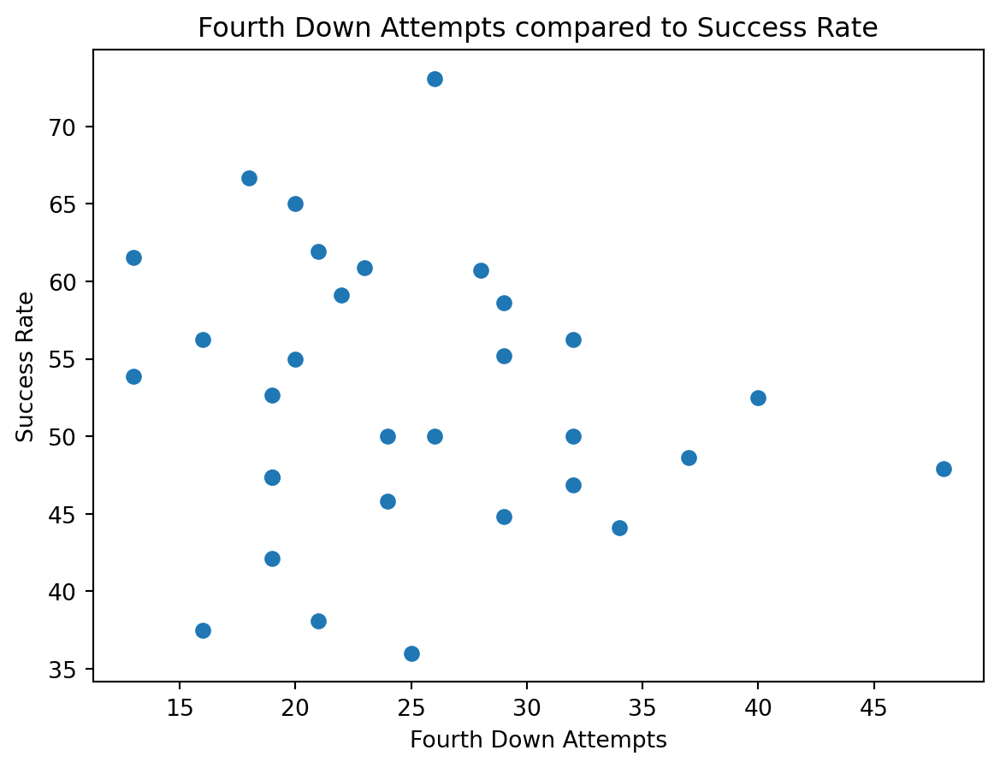
Another correlation metric that we thought may be interesting was the correlation between long scoring drives and frequency. Do longer scoring drives often lead to more successful drives?
The answer here is also no, there is not much correlation between drive length and scoring frequency at all.
x = final_dataset["total_scoring_drives"]
y = final_dataset["avg_plays_per_scoring_drive"]
print(x.corr(y))-0.07100447439413735Visualizations and Distributions
We visualized the distribution of each variable to see if there were any patterns to be found in the data.
Most teams in the NFL tend to gather around the 55% pass rate mark. However, there is another peak at 61% pass rate. The distribution is generally bimodal, showing that there are generally two groups of teams in the NFL, aggressive teams and conservative teams on early downs. There are a few outliers, nobody that is terribly far outside the normal range, however. The Washington Commanders are the most aggressive team, and the Miami Dolphins are the most conservative team.
plt.figure()
plt.hist(final_dataset["early_down_pass_rate_pct"].values, bins=15, color="blue")
plt.title("Early Down Pass Rate Distribution")
plt.xlabel("Pass Rate (%)")
plt.ylabel("Number of Teams")
plt.show()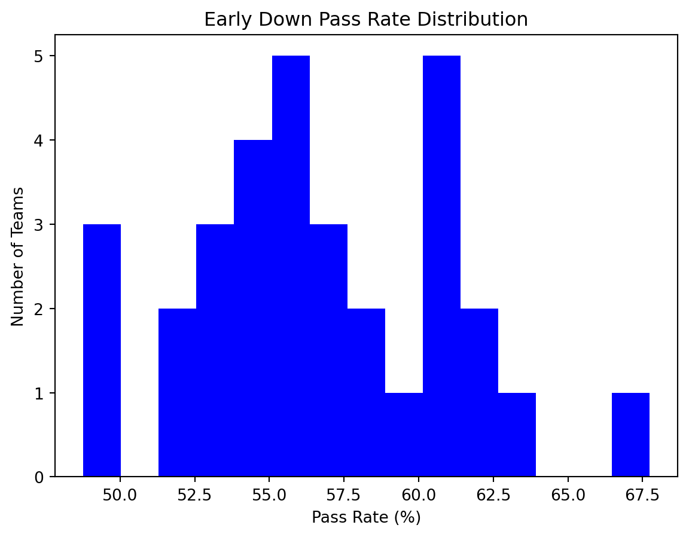
Most teams tend to be around the same level of aggressiveness when it comes to attempting 4th downs. There is a little bit of variation, but not an incredible amount. Most teams have attempted between 15-30 attempts in the 2023 season. There are a few teams that are outliers, and attempted a lot of fourth downs. The two major outliers were the Carolina Panthers and Detroit Lions in the 2023 season.
plt.figure()
final_dataset["fourth_down_attempts"].hist(bins=16, color="blue")
plt.title("Fourth Down Attempts")
plt.xlabel("Attempts")
plt.ylabel("Teams")
plt.show()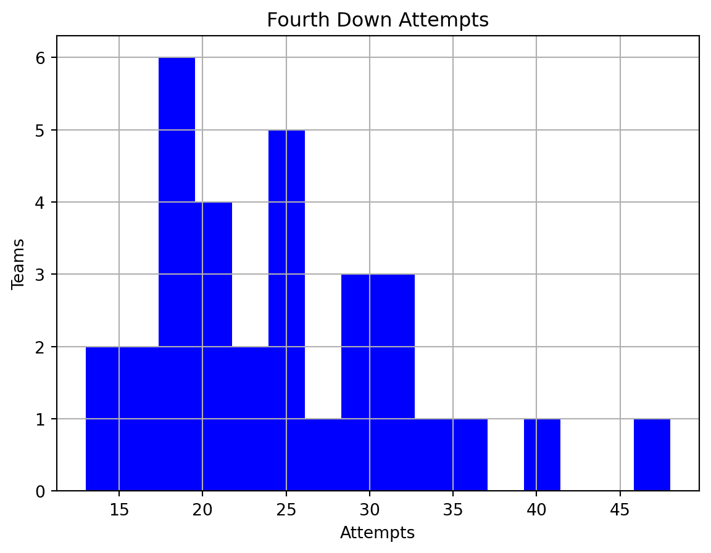
There is a fair amount of variation when it comes to fourth down success rate. It tends to follow generally a normal distribution, with an exception around 45, where more teams cluster. There are a couple teams that have trouble converting, and one team, the Philadelphia Eagles, which were an outlier in terms of success. This is due to the introduction of their “Tush Push” play, which proved to be very successful for them.
plt.figure()
final_dataset["fourth_down_success_rate_pct"].hist(bins=16, color="blue")
plt.title("Fourth Down Success Rate Percentage")
plt.xlabel("Percentage")
plt.ylabel("Teams")
plt.show()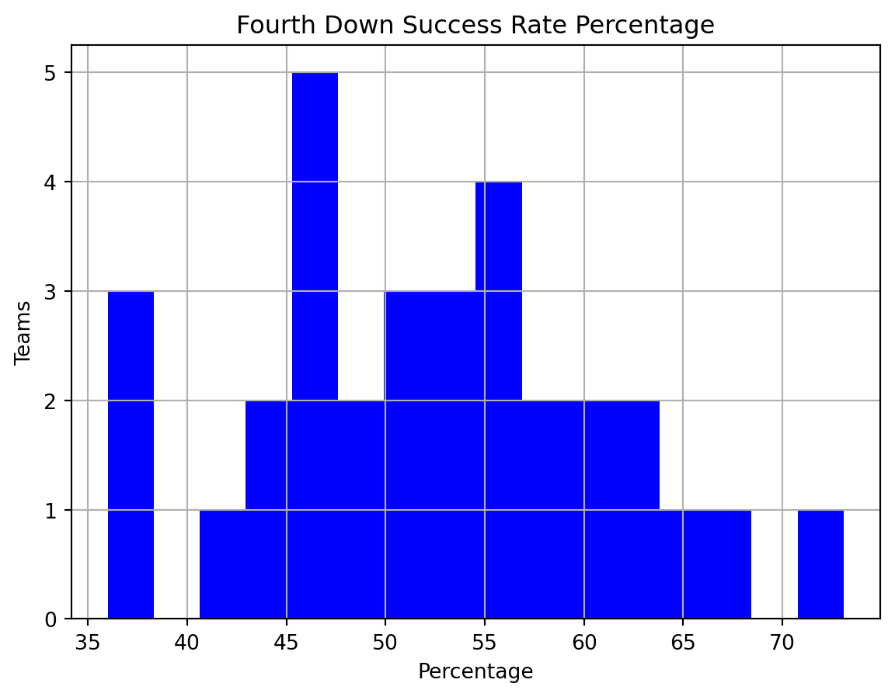
There is a decent amount of variation in total team scoring drives. This makes sense, considering there is generally a good variation of teams that are good vs bad in the league, and scoring is obviously an essential part of what makes a team good or bad. There is a peak in the center, around 65-70 scoring drives, but not a peak outside of that.
plt.figure()
final_dataset["total_scoring_drives"].hist(bins=16, color="blue")
plt.title("Total Scoring Drives")
plt.xlabel("Drives")
plt.ylabel("Teams")
plt.show()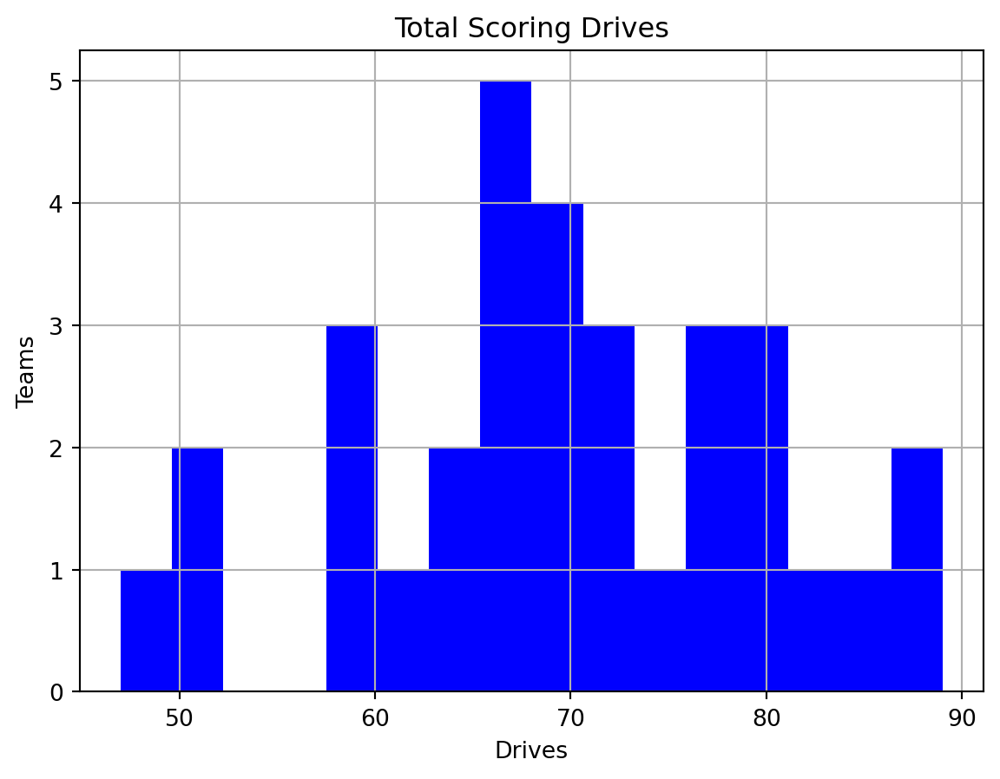
There is a pretty conistent amount of plays that it takes teams to score on average. Between 7 and 9 plays is the averge amount. There are still outliers, however. The New York Jets had the quickest scoring drives, and the Carolina Panthers had the longest scoring drives on average. This matches up with the Panthers being a team that went for a lot of 4th downs, as it means that drives consistently went to 4th downs.
plt.figure()
final_dataset["avg_plays_per_scoring_drive"].hist(bins=16, color="blue")
plt.title("Average Plays Per Scoring Drive")
plt.xlabel("Plays per Drive")
plt.ylabel("Teams")
plt.show()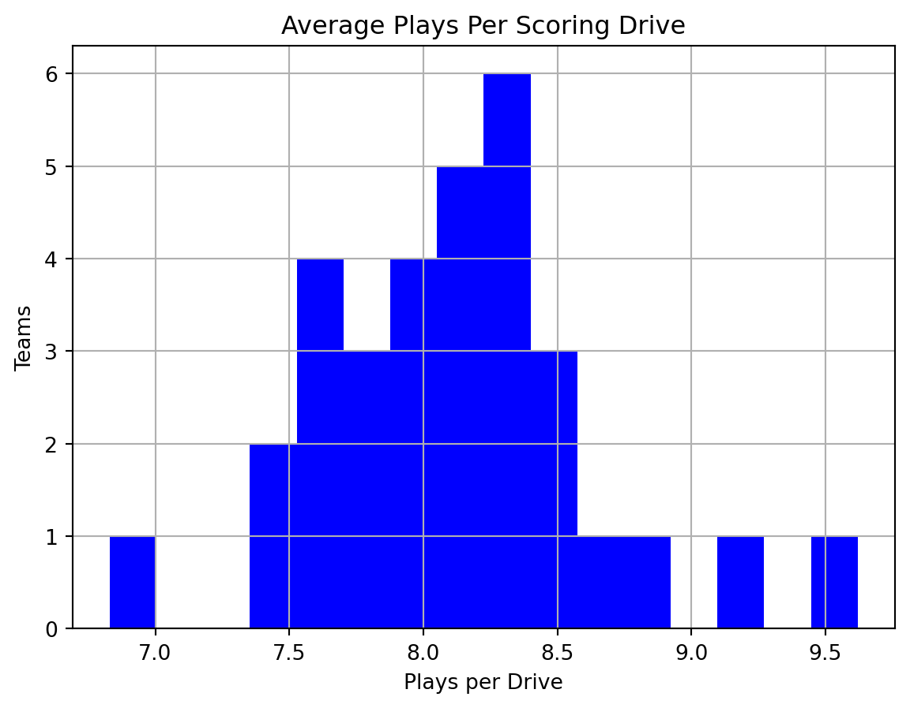
There is a fair amount of variation in terms of red zone plays. The most common cluster was around 160 attempts, with a couple major outliers.
plt.figure()
final_dataset["red_zone_plays"].hist(bins=15, color="blue")
plt.title("Red Zone Plays")
plt.xlabel("Red Zone Attempts")
plt.ylabel("Teams")
plt.show()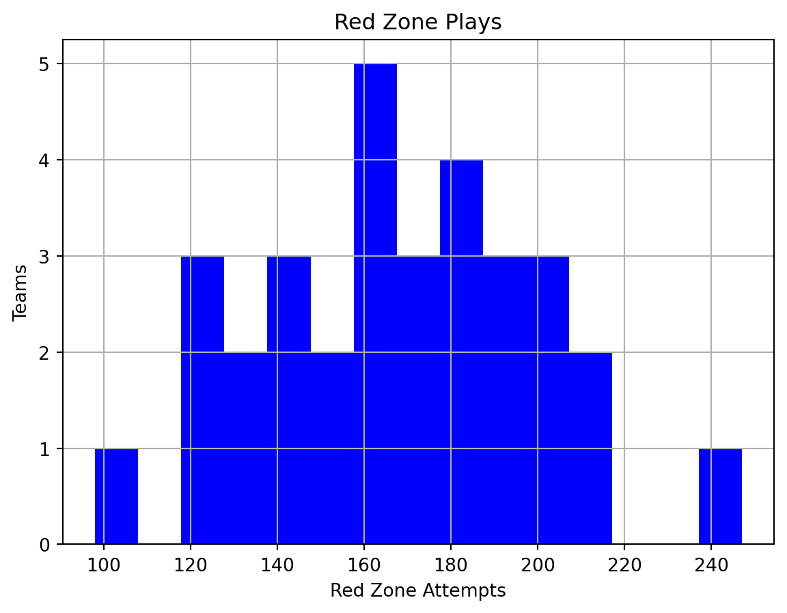
Red zone success rate is something that is pretty consistent across the league. Most teams hover at around 14-18%, with very few outliers.
plt.figure()
final_dataset["red_zone_td_rate_pct"].hist(bins=15, color="blue")
plt.title("Red Zone Success Rate")
plt.xlabel("Touchdown Rate")
plt.ylabel("Teams")
plt.show()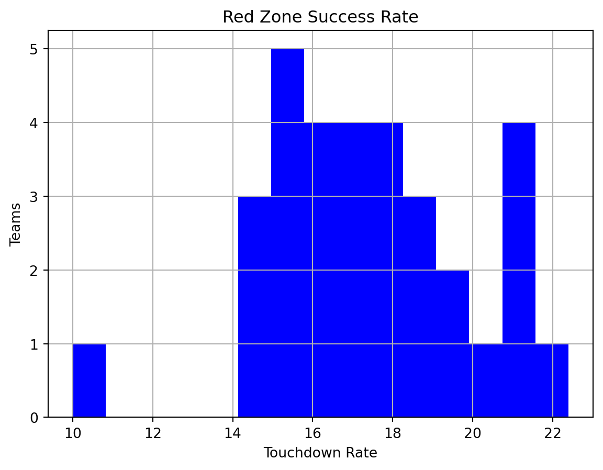
Answering Main Questions
This plot answers our fist main questions, which team had the highest pass rate of the top 10 in 2023. As we can see in the chart, the Washington Commanders, New York Jets and New York Giants were the top three teams in early down pass rate. They passed more than 60% of times on early downs, with the Commanders coming close to 70%.
top_10_pass_rate = final_dataset[final_dataset["early_down_pass_rate_rank"] <= 10].sort_values("early_down_pass_rate_rank")
plt.figure()
top_10_pass_rate.set_index("posteam")["early_down_pass_rate_pct"].plot(kind="bar")
plt.xticks(rotation=45)
plt.title("Early Down Pass Rate Top 10")
plt.xlabel("Team")
plt.ylabel("Pass Rate")
plt.show()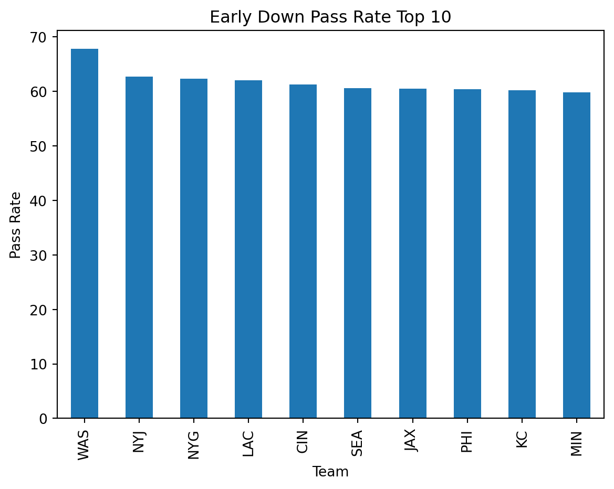
Our second main question dealt with the teams that attempted fourth downs most frequently. As seen earlier in our analysis, the Carolina Panthers and Detroit Lions were the top two teams, followed by the New York Giants. The Panthers attempted the most fourth downs during the 2023 season.
top10_fourth_down = final_dataset[final_dataset["fourth_down_attempt_rank"] <= 10].sort_values("fourth_down_attempt_rank")
plt.figure()
top10_fourth_down.set_index("posteam")["fourth_down_attempts"].plot(kind="bar")
plt.xticks(rotation=45)
plt.title("Fourth Down Attempts Top 10")
plt.xlabel("Team")
plt.ylabel("Attempts")
plt.show()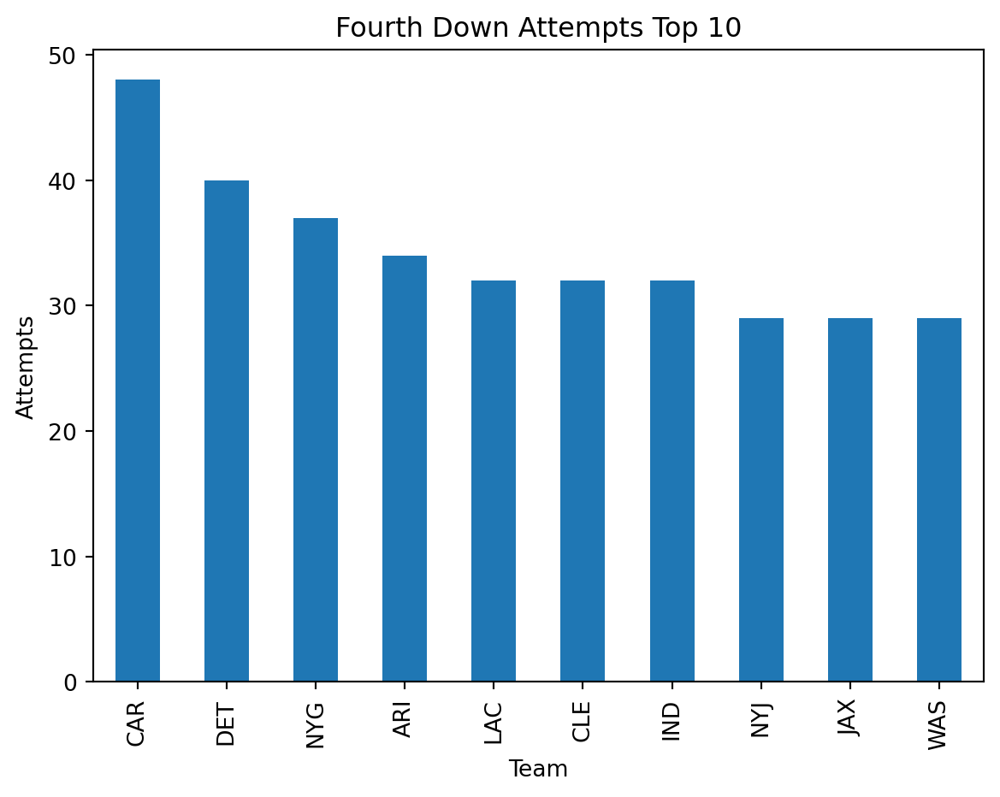
Our third main question deals with the teams that had the fewest playes per socring drive. The New York Jets, Miami Dolphins, and New England Patriots had the fewest in this regard. All three of these teams are in the same division, coincidentally.
top10_scoring_drives = final_dataset[final_dataset["scoring_drive_efficiency_rank"] <= 10].sort_values("scoring_drive_efficiency_rank")
plt.figure()
top10_scoring_drives.set_index("posteam")["avg_plays_per_scoring_drive"].plot(kind="bar")
plt.xticks(rotation=45)
plt.title("Fewest Plays per Scoring Drive")
plt.xlabel("Team")
plt.ylabel("Avg Plays Per Scoring Drive")
plt.show()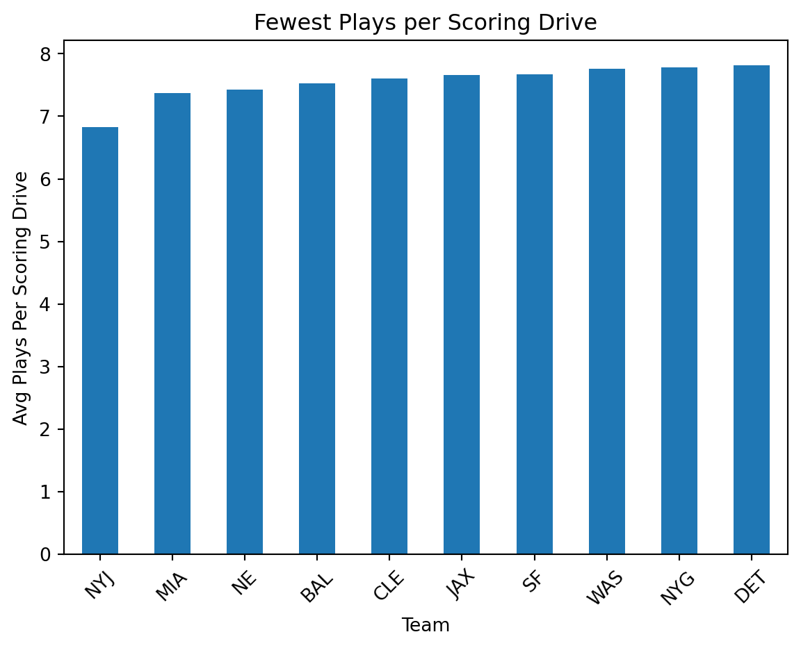
Our last main question asks which teams converted their red zone opportunities into touchdowns most frequently. The top three in this regard were the San Franciso 49ers, the New England Patriots, and the Washington Commanders.
top10_redzone = final_dataset[final_dataset["red_zone_td_rank"] <= 10].sort_values("red_zone_td_rank")
plt.figure()
top10_redzone.set_index("posteam")["red_zone_td_rate_pct"].plot(kind="bar")
plt.xticks(rotation=45)
plt.title("Red Zone TD Rate Top 10")
plt.xlabel("Team")
plt.ylabel("TD Rate")
plt.show()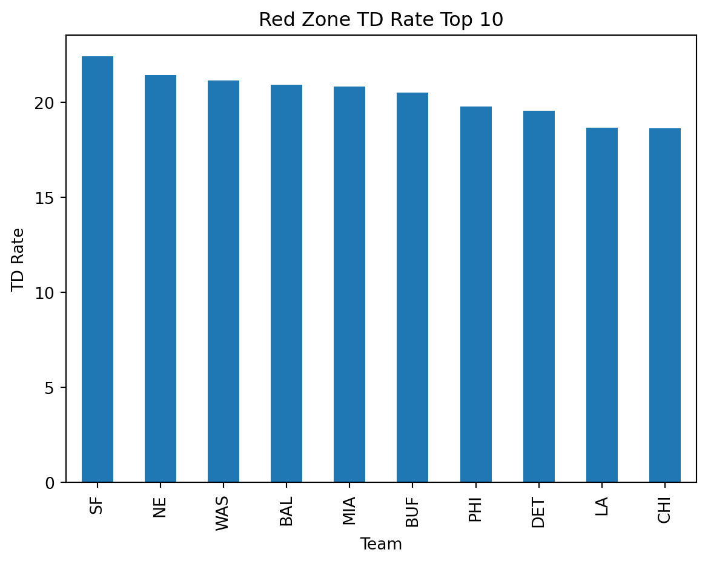
EDA Narrative
Our four main metric distributions all told interesting stories. The distribution for early down pass rate showed that most teams in the NFL pass more than they run on early downs, which is a sharp contrast from how the NFL used to operate.
There is a solid variation when it comes to fourth down attempts in the NFL, but the most interesting takeaway is that attempts and fourth down success percentage are not very correlated. The teams that attempt the most fourth downs are not the teams that convert the most. This can be seen with the Eagles. They had the highest percentage, but were nt in the top 10 of attempts.
We found out that scoring drive length is pretty uniform around the NFL, with most drives ending up at 8 plays per scoring drive.
Red zone touchdown rate was pretty uniform as well, with between 14-18 percent being the norm. Although this difference may seem small, over the course of a season, these percentage points tend to add up.
An interesting thing to see were the teams that were in the top percentage of multiple questions. For example, the New York Jets were top 3 in early down pass rate and fewest plays per scoring drive. This correlation could be a very interesting thing to study in future projects.
Data Product and Description
Column Name Description Values
Posteam NFL team abbreviation String
early_down_long_plays Number of 1/2nd down plays with 10+ yards to go Intege
early_down_pass_rate_pct Percentage of those plays that were passes Numeric percentage
early_down_pass_rate_rank Rank of pass rate among NFL teams Integer
fourth_down_attempts Offensive 4th down conversion attempts Integer
fourth_down_success_rate_pct Percentage of successful 4th down conversions Numeric percentage
fourth_down_attempt_rank Rank of fourth down attempts among NFL teams Integer
total_scoring_drives Total number of scoring drives Integer
avg_plays_per_scoring_drive Average number of plays needed to score Numeric
scoring_drive_efficiency_rank Rank based on fastest scoring drives Integer
red_zone_plays Total offensive plays inside the opponent’s 20-yard line Integer
red_zone_td_rate_pct Percentage of red zone plays resulting in touchdowns Numeric percentage
red_zone_td_rank Rank of red zone touchdown efficiency Integer
How to Load the CSV
import pandas as pd
df = pd.read_csv("nfl_team_tendencies_2023.csv")
print(df.head()) posteam early_down_long_plays early_down_pass_rate_pct \
0 ARI 604 53.97
1 ATL 589 48.90
2 BAL 594 55.39
3 BUF 613 57.42
4 CAR 580 58.28
early_down_pass_rate_rank fourth_down_attempts \
0 24 34
1 31 19
2 19 13
3 14 16
4 12 48
fourth_down_success_rate_pct fourth_down_attempt_rank \
0 44.12 4
1 42.11 23
2 61.54 31
3 56.25 29
4 47.92 1
total_scoring_drives avg_plays_per_scoring_drive \
0 66 8.50
1 66 8.21
2 89 7.53
3 76 8.32
4 50 9.62
scoring_drive_efficiency_rank red_zone_plays red_zone_td_rate_pct \
0 26 147 18.37
1 19 155 14.84
2 4 201 20.90
3 21 200 20.50
4 32 127 14.96
red_zone_td_rank
0 11
1 29
2 4
3 6
4 28 Dataset can also be opened with Microsoft Excel or Google sheets
Intended Uses
The dataset is designed for NFL fans, fantasy football players, and sports content creators who want to compare team tendencies during the 2023 NFL season. Examples of how it could be used: Identifying teams that frequently pass in long-yardage situations, comparing aggressive versus conservative offensive teams, finding teams with efficient scoring drives, comparing red zone efficiency across teams, etc.